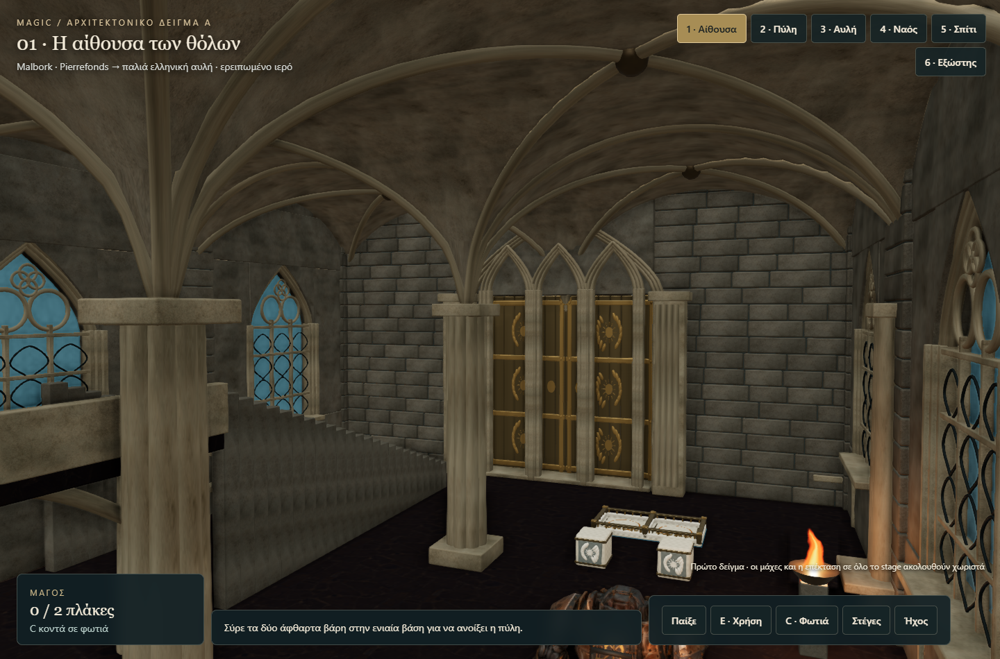
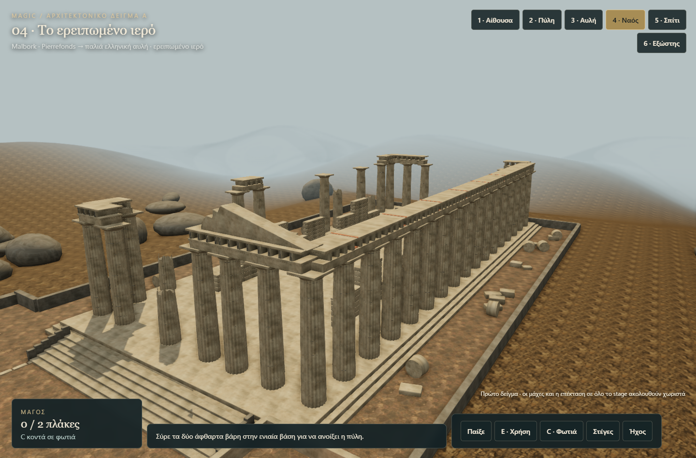
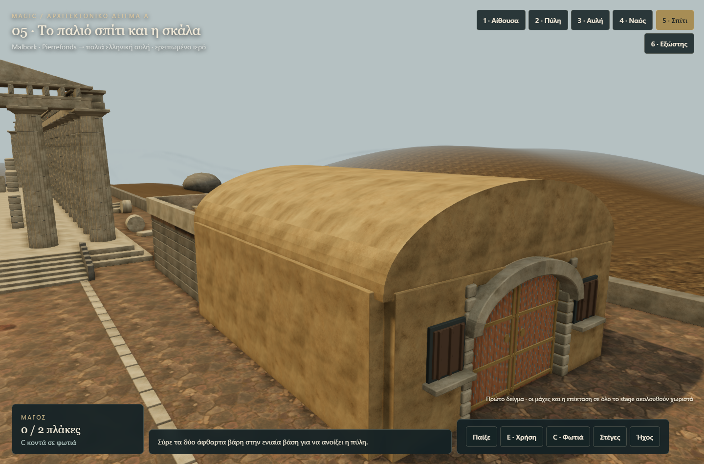
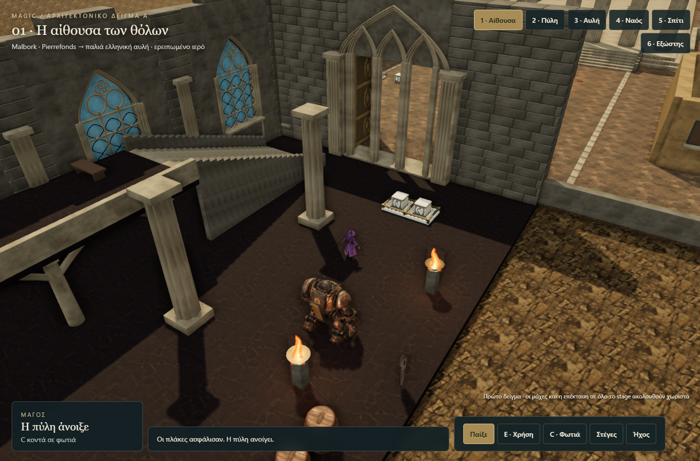

MAGIC · ΠΡΩΤΟ ΠΑΙΞΙΜΟ ΔΕΙΓΜΑ ΑΑπό το κάστρο στο ερειπωμένο ιερό
Θολωτή αίθουσα με αναφορές Malbork και Pierrefonds, δίφυλλη πύλη και αλλαγή σκηνικού σε παλιά ελληνική αυλή. Ο μεγάλος ναός έχει σπασμένους κίονες, τμήματα που λείπουν και ανοιχτή στέγη.
Άνοιξε το δείγμα →Παίξε: WASD / βέλη · σύρε τα βάρη στις πλάκες · C κοντά στη φωτιά · E δίπλα στο HEARTH · αριστερό κλικ μέσα στο HEARTH για φλόγα. Οι αριθμοί 1–6 δείχνουν τις αρχιτεκτονικές όψεις.

Η θολωτή αίθουσα · screenshot από το runtime
Ο μεγάλος ερειπωμένος ναός · screenshot από το runtime
Το παλιό σπίτι και η βεράντα · screenshot από το runtime
Το πραγματικό puzzle της δίφυλλης πύλης · screenshot από το runtimeΤι δοκιμάστηκε
- 23 έλεγχοι: δύο χωριστά βάρη στην ενιαία βάση, μονή πλάκα, καύση ξύλινης πόρτας, σκάλες, έξοδος και επανεπιβίβαση επάνω, είσοδος HEARTH σε σπίτι και κρυφό δωμάτιο.
- Πληκτρολόγιο, ποντίκι και πραγματικά συμβάντα αφής στον browser. Διάταξη 390px χωρίς οριζόντια υπερχείλιση.
- PC / RTX 5080: p95 χρόνου καρέ 4,4–4,6 ms στις δύο μετρημένες όψεις. Δεν αποτελεί μέτρηση φυσικού κινητού.
Αυτό είναι το πρώτο δείγμα της επιλεγμένης κατεύθυνσης, όχι ολοκλήρωση όλου του stage. Η κατανομή 70/30, όλα τα δωμάτια και η πλήρης ενσωμάτωση μαχών/AI εκκρεμούν. Οι αναλογίες έχουν προσαρμοστεί στο HEARTH· δεν πρόκειται για αρχαιολογική ανακατασκευή.
Έλεγχοι runtime · Πηγή, όρια και αναφορές · Προέλευση υλικών
Αρχιτεκτονικές αναφορές: Malbork, Pierrefonds, Σαντορίνη, ΥΣΜΑ / Παρθενώνας. Πρόσθετα υλικά Poly Haven · CC0.